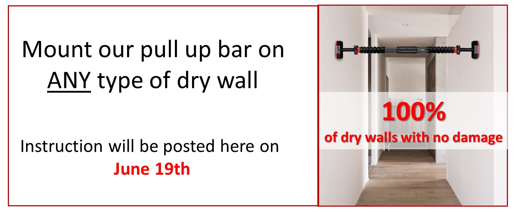
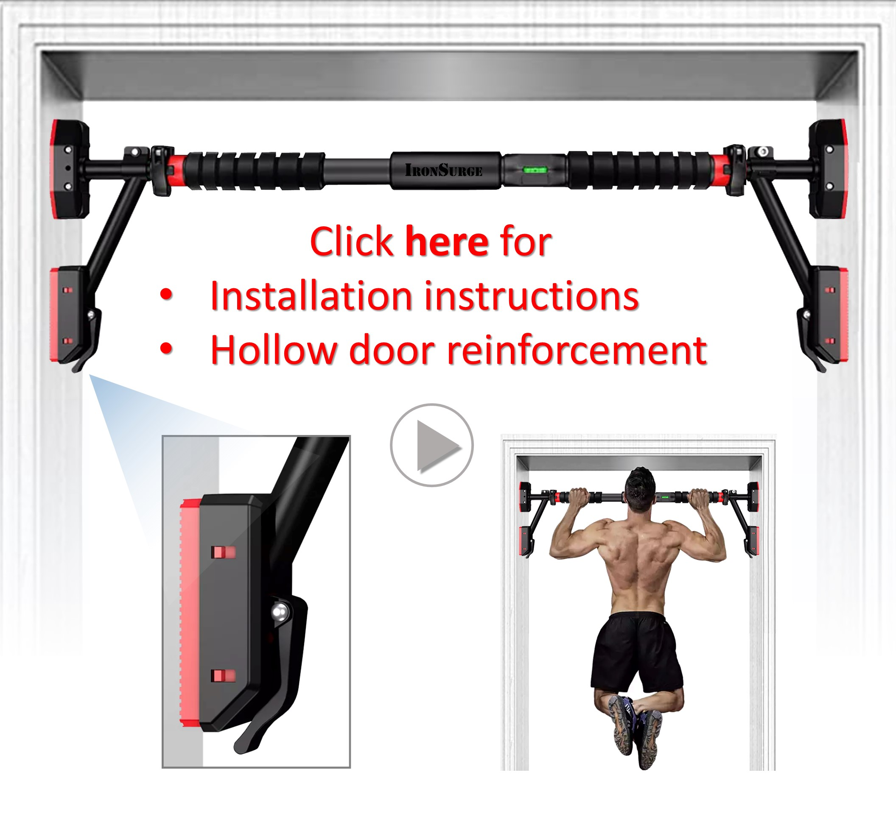

Introducing our top-of-the-line exercise set, designed to take your workout routine to the next level!
Claim your complementary item here (if purchased during a promotional period)
Order your gift
Important Update: If you don’t have a solid doorframe to support the bar at home – no worries! We just found a way to use ANY type of dry wall to hold your pull-up bar without any damage to the wall. A video explaining this method will appear below on June 19th. It’s a game changer!
Please watch this video for installation intructions and doorway reinforcement (hollow doors only)
Exercise videos
Click for exercise videos